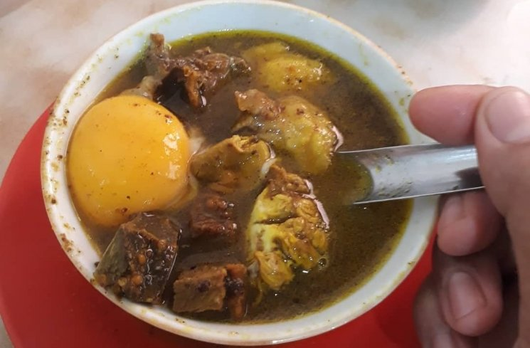

Pallubasa
Pallubasa adalah hidangan tradisional khas Makassar yang kaya rasa dan bertekstur lembut. Sajian ini sering disajikan dengan nasi putih atau ketupat, dilengkapi dengan kacang tanah dan perasan jeruk nipis untuk menambah cita rasa.
Bahan-Bahan:
- 500 gram daging sapi (pilih daging dengan sedikit lemak)
- 200 gram jeroan (paru, hati, atau babat) yang sudah dibersihkan
- 1 liter air untuk merebus daging
- 3 batang serai (memarkan)
- 5 lembar daun salam
- 2 cm lengkuas (memarkan)
- 6 siung bawang putih
- 8 butir bawang merah
- 1 sdt jintan (disangrai dan dihaluskan)
- 2 sdt ketumbar bubuk
- 1 sdm garam
- 1 sdm gula merah (disisir halus)
- 100 ml santan kental
- 1 sdm minyak kelapa
- Kacang tanah goreng yang sudah dihaluskan (untuk taburan)
- Bawang goreng dan jeruk nipis (sebagai pelengkap)
Langkah Memasak:
- Rebus daging dan jeroan dalam panci dengan air, serai, daun salam, dan lengkuas hingga empuk. Angkat daging dan jeroan, lalu potong kecil-kecil sesuai selera. Sisihkan air rebusan (kaldu).
- Haluskan bawang putih, bawang merah, jintan, dan ketumbar. Tumis bumbu halus dengan minyak kelapa hingga harum.
- Masukkan bumbu tumis ke dalam panci kaldu. Tambahkan gula merah, garam, dan santan. Masak dengan api kecil sambil diaduk hingga kuah mengental dan bumbu meresap.
- Masukkan potongan daging dan jeroan ke dalam kuah. Masak kembali hingga semua bahan menyatu dan matang sempurna.
- Sajikan Pallubasa di mangkuk, taburi kacang tanah goreng, bawang goreng, dan peras jeruk nipis di atasnya. Nikmati dengan nasi putih hangat atau ketupat.
Tips: Untuk cita rasa autentik, gunakan santan segar dan pastikan bumbu benar-benar matang sebelum ditambahkan ke kuah.
Tonton Video Tutorial:
Klik link berikut untuk melihat langkah-langkah memasak Pallubasa: Tonton Tutorial Pallubasa
Back to Home